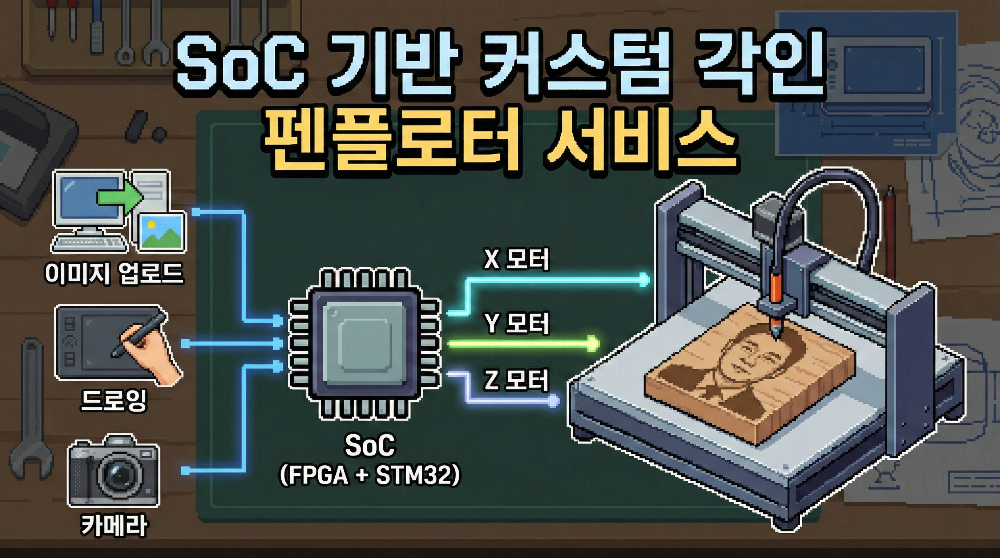
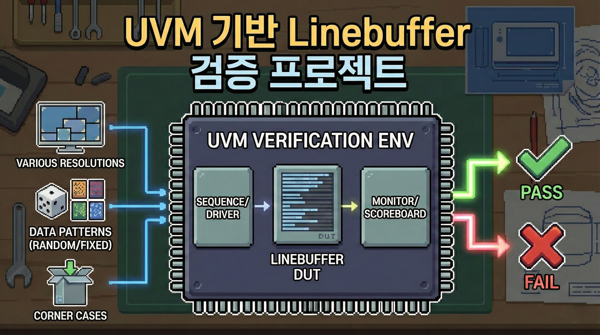
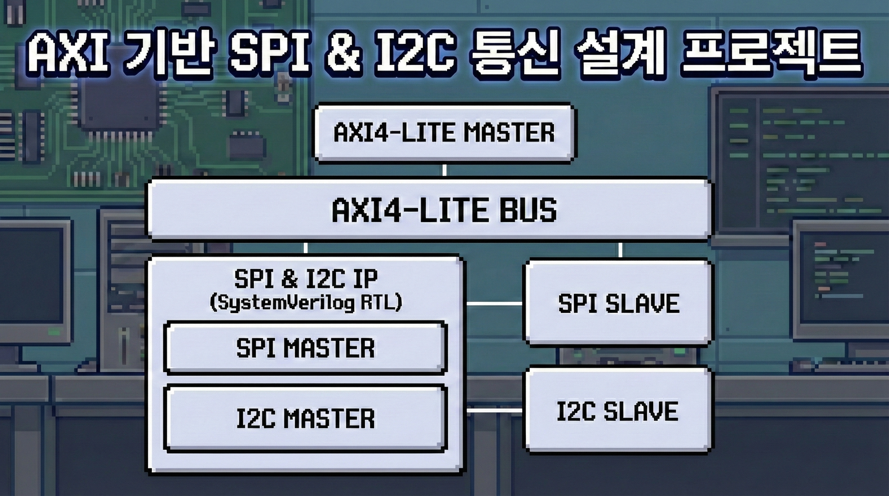
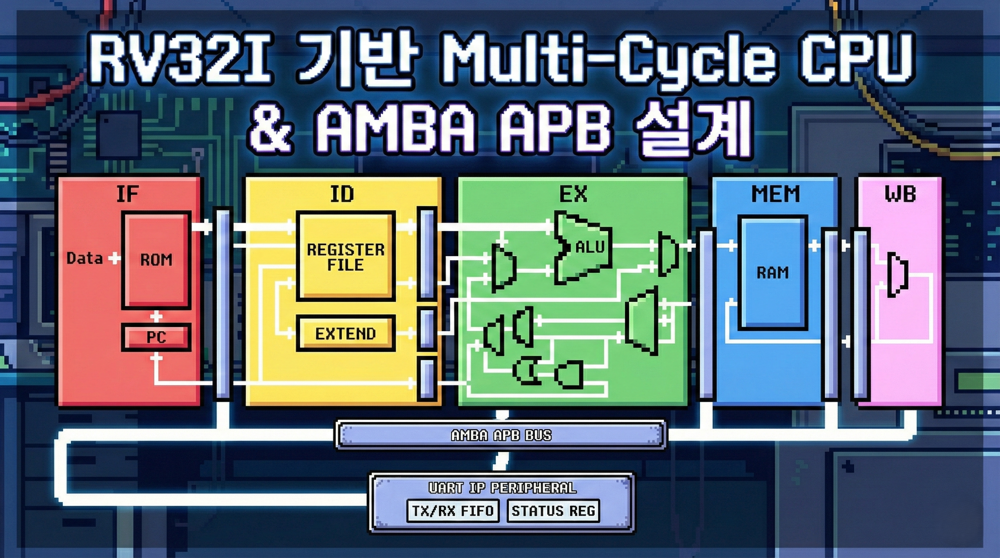
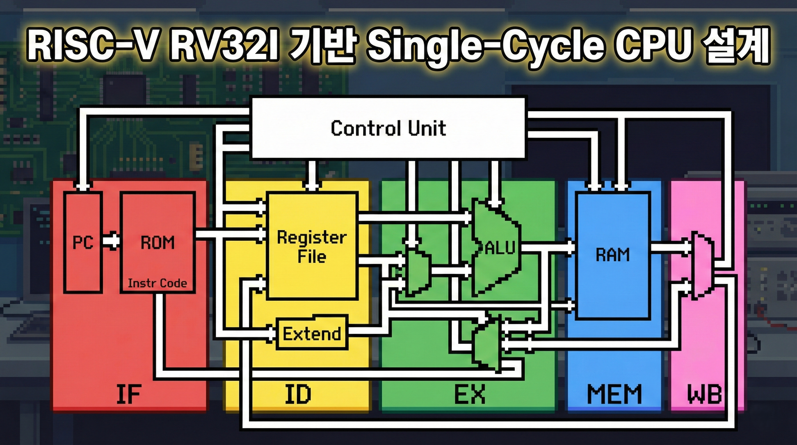

FPGA / STM32
SoC기반 펜 플로터를 이용한 커스텀 각인 서비스
펜 플로터 하드웨어 설계 및 FPGA 이미지 처리, Python 최적화, STM32 모터 제어 구현


펜 플로터 하드웨어 설계 및 FPGA 이미지 처리, Python 최적화, STM32 모터 제어 구현

Line Buffer 유닛에 대한 Frame Size 및 Data Mode별 UVM 검증 환경 구축
FPGA 기반 VGA 타이밍 컨트롤러 및 게임 상태 엔진 구현

센서 인터페이스를 위한 고속 직렬 통신 프로토콜 설계 및 검증

SoC 저속 주변장치 제어를 위한 AMBA APB 프로토콜 기반 IP 통합 설계

RISC-V RV32I ISA 기반의 단일 사이클 프로세서 설계 및 정합성 검증

FPGA 기반 UART 명령 제어 및 다중 센서 데이터 통합 시스템 구축
SoC 기반 팬 플로터를 이용한 커스텀 각인 서비스
시각장애인들을 위한 점자 인식 및 음성 출력 프로그램
MLP를 이용한 FinFET22nm I-V Curve 측정
SoM 보드 활용한 AI 객체 인식 시스템 / SBC 보드를 활용한 임베디드 응용 프로그램(210H)
VerilogHDL/UVM, ARM Cortex-M, AMBA BUS, SoC 설계 실무 교육 이수(950H)
전체 프로젝트의 상세 내용이 담긴 포트폴리오 문서입니다.